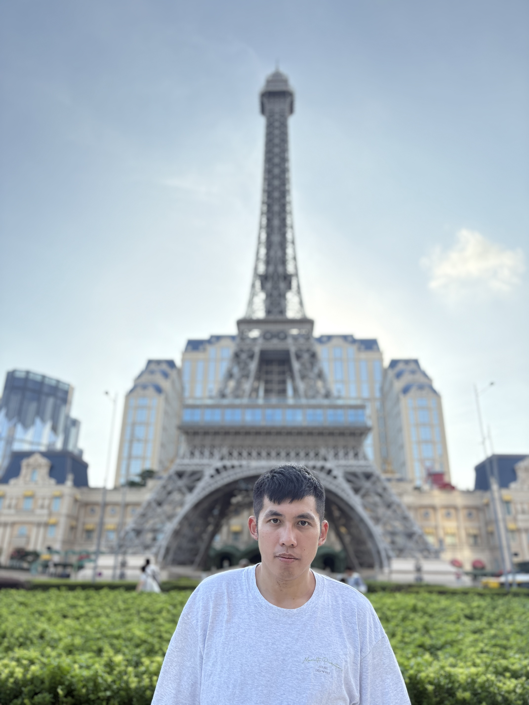

About me 關於我
Yalom（亞隆）團體中產生改變的核心機轉
包括灌注希望、普同感、傳達訊息、利他主義、家庭重現、社交技巧、行為模仿、人際學習、團體凝聚力、矯正性情緒經驗

即將就讀諮商心理研究所
悲傷是我們為愛付出的代價
若要成長就必須接受痛苦，並主張「擁抱孤獨」以建立真實的連結
- 生日: 秘密
-
居住: 台中 - 學位: 心理諮商系/社工系
- 年齡: 不能說的秘密
- Email: 3114048202@smail.nchu.edu.tw
- 夢想: 助人工作者
技能/興趣
各項技能/多元興趣
諮商心理 100%
社會工作 90%
老人服務事業管理 80%
社會教育學系 90%
復健諮商與高齡福祉研究所 55%
台灣臨床心理學之父:柯永河教授
第一「生活要有正確的願景」
第二「保持科學的人生觀」
第三要過「中庸之道」的生活，不求多也不求少，但求心安理得、自由自在
第四「因凡事都有正反兩面，熟慮之後謹慎地做下決定，而下了決定就不要後悔」